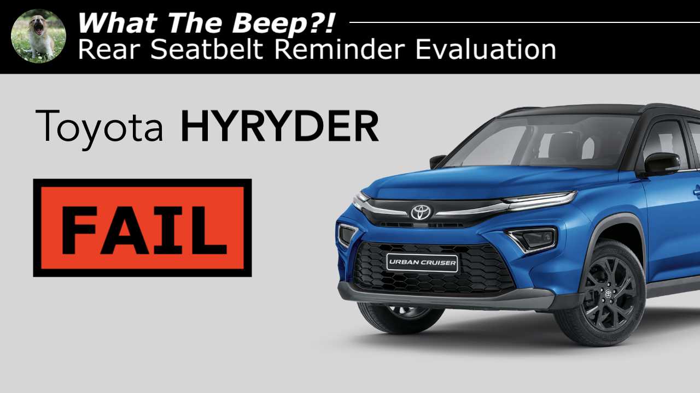

The Yawning Chihuahua
Home | Articles | What The Beep? | Twitter | Instagram | YouTube

Toyota URBAN CRUISER HYRYDER |
|||
|---|---|---|---|
| Behaviour of second-level warning in the 2nd-row outboard seats | |||
| Testcase | Description | Audible warning | Verdict |
 |
occupant does not fasten seatbelt | NO | NOT OK |
 |
occupant takes off seatbelt | YES | OK |
 |
seatbelt not fastened on an empty seat | NO | OK |
 |
seatbelt taken off on an empty seat | YES | NOT OK |
| FAIL | |||